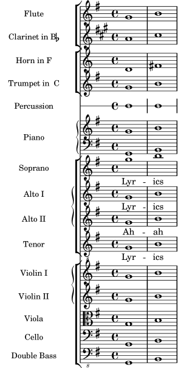

A.5 Orchestral templates
A.5.1 Orchestra, choir and piano
This template demonstrates the use of nested StaffGroup and
GrandStaff contexts to sub-group instruments of the same type
together, and a way to use \transpose so that variables hold
music for transposing instruments at concert pitch.
#(set-global-staff-size 17)
\paper {
indent = 3.0\cm % space for instrumentName
short-indent = 1.5\cm % space for shortInstrumentName
}
fluteMusic = \relative c' { \key g \major g'1 b }
% Pitches as written on a manuscript for Clarinet in A
% are transposed to concert pitch.
clarinetMusic = \transpose c' a
\relative c'' { \key bes \major bes1 d }
trumpetMusic = \relative c { \key g \major g''1 b }
% Key signature is often omitted for horns
hornMusic = \transpose c' f
\relative c { d'1 fis }
percussionMusic = \relative c { \key g \major g1 b }
sopranoMusic = \relative c'' { \key g \major g'1 b }
sopranoLyrics = \lyricmode { Lyr -- ics }
altoIMusic = \relative c' { \key g \major g'1 b }
altoIIMusic = \relative c' { \key g \major g'1 b }
altoILyrics = \sopranoLyrics
altoIILyrics = \lyricmode { Ah -- ah }
tenorMusic = \relative c' { \clef "treble_8" \key g \major g1 b }
tenorLyrics = \sopranoLyrics
pianoRHMusic = \relative c { \key g \major g''1 b }
pianoLHMusic = \relative c { \clef bass \key g \major g1 b }
violinIMusic = \relative c' { \key g \major g'1 b }
violinIIMusic = \relative c' { \key g \major g'1 b }
violaMusic = \relative c { \clef alto \key g \major g'1 b }
celloMusic = \relative c { \clef bass \key g \major g1 b }
bassMusic = \relative c { \clef "bass_8" \key g \major g,1 b }
\score {
<<
\new StaffGroup = "StaffGroup_woodwinds" <<
\new Staff = "Staff_flute" {
\set Staff.instrumentName = #"Flute"
% shortInstrumentName, midiInstrument, etc.
% may be set here as well
\fluteMusic
}
\new Staff = "Staff_clarinet" {
\set Staff.instrumentName =
\markup { \concat { "Clarinet in B" \flat } }
% Declare that written Middle C in the music
% to follow sounds a concert B flat, for
% output using sounded pitches such as MIDI.
\transposition bes
% Print music for a B-flat clarinet
\transpose bes c' \clarinetMusic
}
>>
\new StaffGroup = "StaffGroup_brass" <<
\new Staff = "Staff_hornI" {
\set Staff.instrumentName = #"Horn in F"
\transposition f
\transpose f c' \hornMusic
}
\new Staff = "Staff_trumpet" {
\set Staff.instrumentName = #"Trumpet in C"
\trumpetMusic
}
>>
\new RhythmicStaff = "RhythmicStaff_percussion" <<
\set RhythmicStaff.instrumentName = #"Percussion"
\percussionMusic
>>
\new PianoStaff <<
\set PianoStaff.instrumentName = #"Piano"
\new Staff { \pianoRHMusic }
\new Staff { \pianoLHMusic }
>>
\new ChoirStaff = "ChoirStaff_choir" <<
\new Staff = "Staff_soprano" {
\set Staff.instrumentName = #"Soprano"
\new Voice = "soprano"
\sopranoMusic
}
\new Lyrics \lyricsto "soprano" { \sopranoLyrics }
\new GrandStaff = "GrandStaff_altos"
\with { \accepts Lyrics } <<
\new Staff = "Staff_altoI" {
\set Staff.instrumentName = #"Alto I"
\new Voice = "altoI"
\altoIMusic
}
\new Lyrics \lyricsto "altoI" { \altoILyrics }
\new Staff = "Staff_altoII" {
\set Staff.instrumentName = #"Alto II"
\new Voice = "altoII"
\altoIIMusic
}
\new Lyrics \lyricsto "altoII" { \altoIILyrics }
>>
\new Staff = "Staff_tenor" {
\set Staff.instrumentName = #"Tenor"
\new Voice = "tenor"
\tenorMusic
}
\new Lyrics \lyricsto "tenor" { \tenorLyrics }
>>
\new StaffGroup = "StaffGroup_strings" <<
\new GrandStaff = "GrandStaff_violins" <<
\new Staff = "Staff_violinI" {
\set Staff.instrumentName = #"Violin I"
\violinIMusic
}
\new Staff = "Staff_violinII" {
\set Staff.instrumentName = #"Violin II"
\violinIIMusic
}
>>
\new Staff = "Staff_viola" {
\set Staff.instrumentName = #"Viola"
\violaMusic
}
\new Staff = "Staff_cello" {
\set Staff.instrumentName = #"Cello"
\celloMusic
}
\new Staff = "Staff_bass" {
\set Staff.instrumentName = #"Double Bass"
\bassMusic
}
>>
>>
\layout { }
}

Other languages: česky, deutsch, español, français, italiano, 日本語, nederlands.
About automatic language selection.